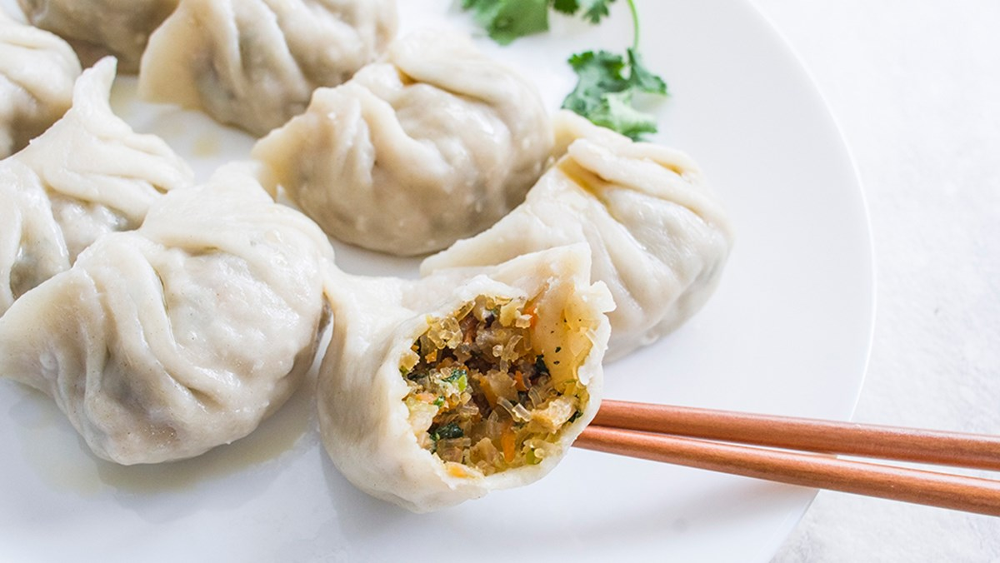
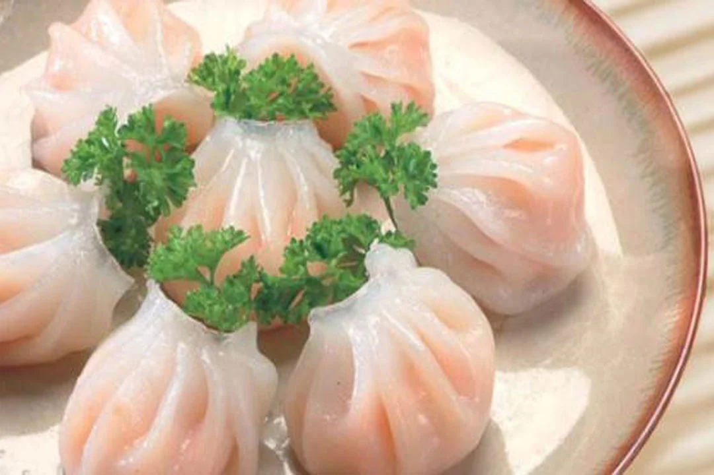

Há Cảo Chay là món ăn thanh đạm, mềm thơm và đầy dinh dưỡng, rất thích
hợp dùng làm món khai vị, bữa sáng nhẹ nhàng hoặc món ăn vặt lành mạnh.
Với lớp vỏ bánh mỏng trong suốt, nhân rau củ nấm tươi ngon, há cảo chay
không chỉ hấp dẫn về hương vị mà còn đẹp mắt, mang lại cảm giác nhẹ
nhàng và dễ chịu.


Nguyên liệu
Vỏ há cảo: Khoảng 30-40 vỏ (có thể mua sẵn loại vỏ há
cảo tươi hoặc khô, chọn loại chay)
Bún tàu: Ngâm bún tàu trong nước ấm khoảng 5-7
phút cho mềm, vớt ra để ráo, cắt khúc ngắn.
Trộn nhân: Trong một tô lớn, cho nấm mèo, nấm
hương, củ sắn, cà rốt, đậu phụ (nếu dùng) và bún tàu vào.
Thêm các gia vị ướp nhân: 2 muỗng canh nước tương, 1 muỗng canh
dầu mè, 1 muỗng cà phê đường, 1 muỗng cà phê hạt nêm chay (tùy
chọn), 1/2 muỗng cà phê tiêu xay, 1/2 muỗng cà phê muối.
Trộn đều tất cả các nguyên liệu. Dùng tay bóp nhẹ để nhân hòa
quyện và thấm gia vị.
Đun nóng 1-2 muỗng canh dầu ăn trong chảo, cho nhân vào xào sơ
khoảng 3-5 phút cho nhân chín tới và dậy mùi thơm. Để nhân nguội
hoàn toàn trước khi gói.
Bước 2: Gói há cảo
Lấy từng vỏ há cảo. Múc một lượng nhân vừa đủ (khoảng 1 muỗng cà
phê) đặt vào giữa vỏ bánh.
Gấp đôi vỏ bánh lại, tạo hình bán nguyệt. Dùng ngón tay miết chặt
mép bánh để dán kín. Bạn có thể dùng một chút nước lọc để dán mép
bánh cho dính hơn.
Tạo hình há cảo bằng cách xếp các nếp gấp nhỏ dọc theo mép bánh để
tạo hình đẹp mắt.
Làm lần lượt cho đến khi hết nhân.
Bước 3: Hấp há cảo
Chuẩn bị xửng hấp. Phết một lớp dầu ăn mỏng lên đáy xửng hoặc lót
giấy nến để há cảo không bị dính.
Xếp há cảo vào xửng hấp, đảm bảo có khoảng cách giữa các chiếc để
há cảo không bị dính vào nhau khi nở.
Đun sôi nước trong nồi hấp. Khi nước sôi mạnh, đặt xửng há cảo vào
và hấp khoảng 10-12 phút. Há cảo chín khi vỏ bánh trở nên trong
suốt và nhân bên trong chín đều.
Bước 4: Pha nước chấm và thưởng thức
Pha nước chấm: Trong một bát nhỏ, pha 3 muỗng
canh nước tương, 2 muỗng canh nước lọc, 1 muỗng canh đường và 1
muỗng canh giấm gạo. Khuấy đều cho đường tan hoàn toàn.
Thêm gừng thái sợi hoặc băm nhỏ và ớt thái lát/băm nhỏ (nếu dùng)
vào bát nước chấm. Nêm nếm lại cho vừa khẩu vị.
Há cảo chay ngon nhất khi ăn nóng. Dọn há cảo ra đĩa và chấm kèm
với nước chấm đã pha.
Mẹo nhỏ để Há Cảo Chay ngon hơn:
Chọn vỏ há cảo: Chọn loại vỏ há cảo tươi, mỏng, dai
để dễ gói và khi hấp vỏ sẽ trong, đẹp mắt.
Nhân há cảo:
Xào sơ nhân trước khi gói giúp nhân thấm vị hơn và khi hấp sẽ
chín nhanh hơn.
Củ sắn giúp nhân có độ giòn và ngọt tự nhiên.
Nếu không ăn chay có tỏi, bạn có thể thay thế bằng hành boa rô
(tỏi tây) để tạo mùi thơm.
Gói há cảo:
Không cho quá nhiều nhân sẽ làm há cảo khó gói và dễ bị bung.
Dùng một chút nước để dán mép bánh thật chặt, tránh bị hở khi
hấp.
Tạo hình nếp gấp không chỉ làm đẹp mà còn giúp há cảo giữ được
hình dạng.
Hấp há cảo:
Đảm bảo nước trong nồi hấp đã sôi mạnh trước khi đặt xửng vào.
Không hấp quá lâu sẽ làm há cảo bị dai và mất độ ngon.
Phết dầu ăn vào đáy xửng hoặc lót giấy nến giúp há cảo không bị
dính.
Nước chấm: Nước chấm gừng tỏi là sự kết hợp hoàn
hảo với há cảo chay, giúp tăng thêm hương vị và làm món ăn thêm hấp
dẫn.
Bảo quản: Há cảo đã gói có thể xếp vào hộp kín và
bảo quản trong ngăn mát tủ lạnh 1-2 ngày. Khi ăn, lấy ra hấp lại.
Bình luận và Đánh giá
Đánh giá của bạn
Chưa có bình luận nào.